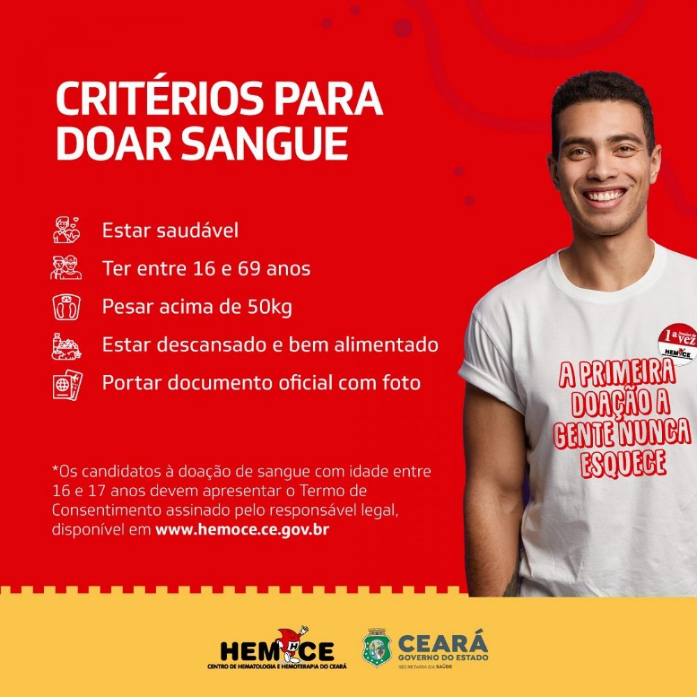

Entre os dias 04, 05 e 06 de outubro, o Colégio Objetivo, na cidade de Juazeiro do Norte, realizará, sua VII Feira de Ciências sobre "O mundo pós-pandemia e os avanços tecnológicos", composta por turmas de salas do Infantil V até 2º do Ensino Médio, que abordarão sobre seus temas escolhidos. Dentre o 9º ano, temos a turma do 9º ano C, cujo tema é "Novas profissões e a tecnologia".
Formado por 5 grupos: Educação, Saúde, Economia, Tecnologia e Cultura, os estudantes irão apresentar suas pesquisas e materiais confeccionados, posicionados em forma de Stands onde o visitante irá mover-se para cada um deles.
O objetivo desse projeto, além de despertar o interesse nos alunos do conhecimento, da pesquisa e propagação da ciência, vai além do cunho social, ajudando a comunidade e o país através das distribuições de alimentos, roupas e brinquedos fornecidos pelos estudantes. Também podemos citar a coleta de sangue, realizada em parceria com o Hemoce.
O centro de Hematologia e Hemoterapia do Ceará(Hemoce) tem como missão promover a política estadual do sangue e atuar com excelência e inovação em hemoterapia, hematologia e transplantes, como suporte ao sistema de saúde e atualmente atende cerca de 500 unidades de saúde no estado, ajudando a salvar vidas de pacientes que necessitam de tranfusão de sangue.
A coleta sanguínea no Colégio Objetivo só começará a ser realizada no dia 07 de outubro. Porém, durante a semana, é possível contribuir nos postos, apenas informando que se destina ao projeto.
"A cada bolsa de 300 a 400 ml atende cerca de 4 pessoas e cada sala deve trazer no mínimo 4 doadores. Ou seja, em cada sala, estamos auxiliando pelo menos 16 indivíduos. Com esse pequeno gesto de doação, conseguimos ajudar pacientes possivelmente até em estado grave." - relata Célia Santos, coordenadora do NEO (Núcleo de Exatas e Olimpíadas).
| Exposição | |
|---|---|
| | |
| | |
| | |
| Doação de Sangue | |
|---|---|
| | |
| |